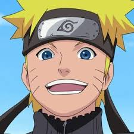
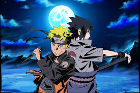
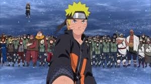

Naruto Uzumaki

About
Naruuto Uzumaki is a shinobi of Konohagakure's Uzumaki clan. He became the jinchūriki of the Nine-Tails on the day of his birth — a fate that caused him to be shunned by most of Konoha throughout his childhood. After joining Team Kakashi, Naruto worked hard to gain the village's acknowledgement all the while chasing his dream to become Hokage. In the following years, through many hardships and ordeals, he became a capable ninja regarded as a hero both by the villagers, and soon after, the rest of the world, becoming known as the Hero of the Hidden Leaf (木ノ葉隠れの英雄, Konohagakure no Eiyū, Literally meaning: Hero of the Hidden Tree Leaves). He soon proved to be one of the main factors in winning the Fourth Shinobi World War, leading him to achieve his dream and become the village's Seventh Hokage
Achievements

- Saved his friend Sasuke from the darkness in his heart.
- Saved his village from pain
- Was one of the main heroe's of the Great Ninja War!
- Can talk any villian into giving up their evin intent.
